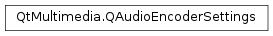

QAudioEncoderSettings¶
Synopsis¶
Functions¶
- def
__eq__(other) - def
__ne__(other) - def
bitRate() - def
channelCount() - def
codec() - def
encodingMode() - def
encodingOption(option) - def
encodingOptions() - def
isNull() - def
quality() - def
sampleRate() - def
setBitRate(bitrate) - def
setChannelCount(channels) - def
setCodec(codec) - def
setEncodingMode(arg__1) - def
setEncodingOption(option, value) - def
setEncodingOptions(options) - def
setQuality(quality) - def
setSampleRate(rate)
Detailed Description¶
The
PySide2.QtMultimedia.QAudioEncoderSettingsclass provides a set of audio encoder settings.A audio encoder settings object is used to specify the audio encoder settings used by
PySide2.QtMultimedia.QMediaRecorder. Audio encoder settings are selected by constructing aPySide2.QtMultimedia.QAudioEncoderSettingsobject, setting the desired properties and then passing it to aPySide2.QtMultimedia.QMediaRecorderinstance using theQMediaRecorder.setEncodingSettings()function.QAudioEncoderSettings audioSettings; audioSettings.setCodec("audio/mpeg"); audioSettings.setChannelCount(2); recorder->setAudioSettings(audioSettings);
-
class
PySide2.QtMultimedia.QAudioEncoderSettings¶ -
class
PySide2.QtMultimedia.QAudioEncoderSettings(other) Parameters: other – PySide2.QtMultimedia.QAudioEncoderSettingsConstruct a null audio encoder settings object.
Constructs a copy of the audio encoder settings object
other.
-
PySide2.QtMultimedia.QAudioEncoderSettings.bitRate()¶ Return type: PySide2.QtCore.intReturns the bit rate of the compressed audio stream in bits per second.
-
PySide2.QtMultimedia.QAudioEncoderSettings.channelCount()¶ Return type: PySide2.QtCore.intReturns the number of audio channels.
-
PySide2.QtMultimedia.QAudioEncoderSettings.codec()¶ Return type: unicode Returns the audio codec.
-
PySide2.QtMultimedia.QAudioEncoderSettings.encodingMode()¶ Return type: PySide2.QtMultimedia.QMultimedia.EncodingModeReturns the audio encoding mode.
See also
PySide2.QtMultimedia.QAudioEncoderSettings.setEncodingMode()QMultimedia.EncodingMode
-
PySide2.QtMultimedia.QAudioEncoderSettings.encodingOption(option)¶ Parameters: option – unicode Return type: object Returns the value of encoding
option.
-
PySide2.QtMultimedia.QAudioEncoderSettings.encodingOptions()¶ Return type: PySide2.QtCore.QVariantMapReturns the all the encoding options as
PySide2.QtCore.QVariantMap.
-
PySide2.QtMultimedia.QAudioEncoderSettings.isNull()¶ Return type: PySide2.QtCore.boolIdentifies if an audio settings object is initialized.
Returns true if the settings object is null, and false if it is not.
-
PySide2.QtMultimedia.QAudioEncoderSettings.__ne__(other)¶ Parameters: other – PySide2.QtMultimedia.QAudioEncoderSettingsReturn type: PySide2.QtCore.boolDetermines if
otheris of equal value to an audio encoder settings object.Returns true if the settings objects are not of equal value, and true if they are of equal value.
-
PySide2.QtMultimedia.QAudioEncoderSettings.__eq__(other)¶ Parameters: other – PySide2.QtMultimedia.QAudioEncoderSettingsReturn type: PySide2.QtCore.boolDetermines if
otheris of equal value to an audio encoder settings object.Returns true if the settings objects are of equal value, and false if they are not of equal value.
-
PySide2.QtMultimedia.QAudioEncoderSettings.quality()¶ Return type: PySide2.QtMultimedia.QMultimedia.EncodingQualityReturns the audio encoding quality.
-
PySide2.QtMultimedia.QAudioEncoderSettings.sampleRate()¶ Return type: PySide2.QtCore.intReturns the audio sample rate in Hz.
-
PySide2.QtMultimedia.QAudioEncoderSettings.setBitRate(bitrate)¶ Parameters: bitrate – PySide2.QtCore.intSets the audio bit
ratein bits per second.
-
PySide2.QtMultimedia.QAudioEncoderSettings.setChannelCount(channels)¶ Parameters: channels – PySide2.QtCore.intSets the number of audio
channels.A value of -1 indicates the encoder should make an optimal choice based on what is available from the audio source and the limitations of the codec.
-
PySide2.QtMultimedia.QAudioEncoderSettings.setCodec(codec)¶ Parameters: codec – unicode Sets the audio
codec.
-
PySide2.QtMultimedia.QAudioEncoderSettings.setEncodingMode(arg__1)¶ Parameters: arg__1 – PySide2.QtMultimedia.QMultimedia.EncodingModeSets the audio encoding
modesetting.If
QMultimedia.ConstantQualityEncodingis set, the quality encoding parameter is used and bit rate is ignored, otherwise the bitrate is used.The audio codec, channels count and sample rate settings are used in all the encoding modes.
See also
PySide2.QtMultimedia.QAudioEncoderSettings.encodingMode()QMultimedia.EncodingMode
-
PySide2.QtMultimedia.QAudioEncoderSettings.setEncodingOption(option, value)¶ Parameters: - option – unicode
- value – object
Set the encoding
optiontovalue.The supported set and meaning of encoding options are system and selected codec specific.
-
PySide2.QtMultimedia.QAudioEncoderSettings.setEncodingOptions(options)¶ Parameters: options – PySide2.QtCore.QVariantMapReplace all the encoding options with
options.The supported set and meaning of encoding options are system and selected codec specific.
-
PySide2.QtMultimedia.QAudioEncoderSettings.setQuality(quality)¶ Parameters: quality – PySide2.QtMultimedia.QMultimedia.EncodingQualitySet the audio encoding
quality.Setting the audio quality parameter allows backend to choose the balanced set of encoding parameters to achieve the desired quality level.
The
qualitysettings parameter is only used in theconstant qualityencoding mode.
-
PySide2.QtMultimedia.QAudioEncoderSettings.setSampleRate(rate)¶ Parameters: rate – PySide2.QtCore.intSets the audio sample
ratein Hz.A value of -1 indicates the encoder should make an optimal choice based on what is avaialbe from the audio source and the limitations of the codec.
© 2018 The Qt Company Ltd. Documentation contributions included herein are the copyrights of their respective owners. The documentation provided herein is licensed under the terms of the GNU Free Documentation License version 1.3 as published by the Free Software Foundation. Qt and respective logos are trademarks of The Qt Company Ltd. in Finland and/or other countries worldwide. All other trademarks are property of their respective owners.